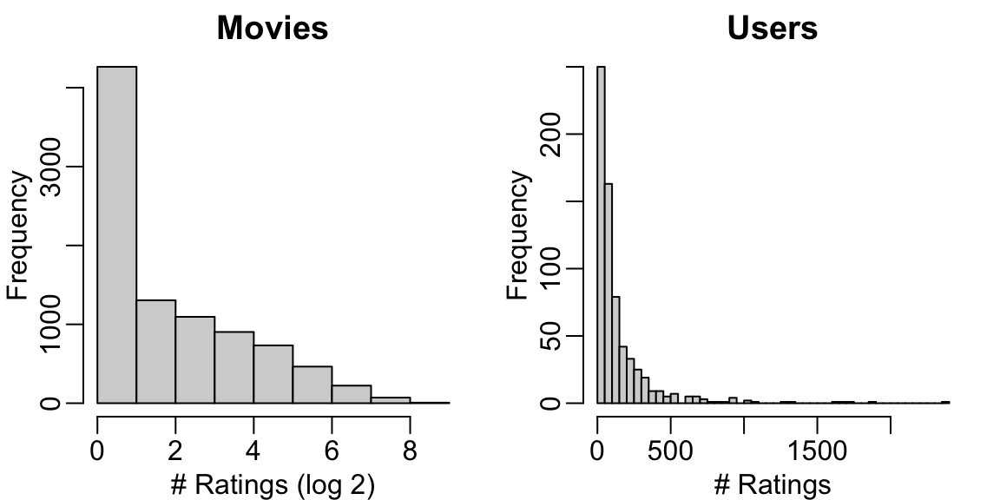
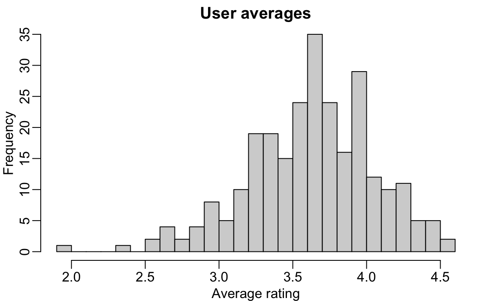
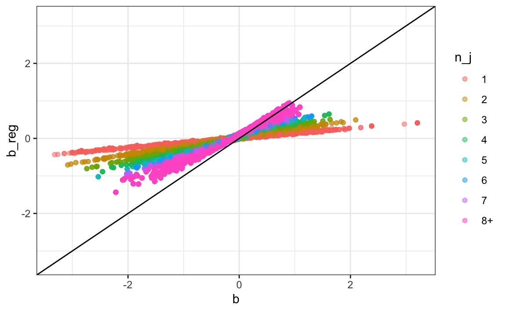
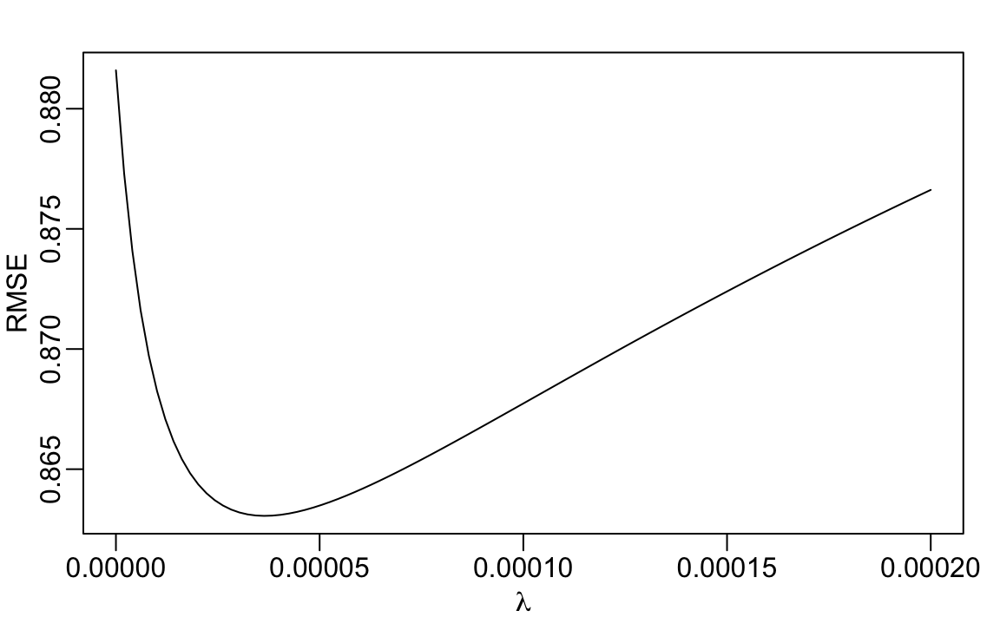

library(behdslabs)
movielens |> tibble:::tibble() |> head(5)
#> # A tibble: 5 × 7
#> movieId title year genres userId rating timestamp
#> <int> <chr> <int> <fct> <int> <dbl> <int>
#> 1 31 Dangerous Minds 1995 Drama 1 2.5 1.26e9
#> 2 1029 Dumbo 1941 Anima… 1 3 1.26e9
#> 3 1061 Sleepers 1996 Thril… 1 3 1.26e9
#> 4 1129 Escape from New York 1981 Actio… 1 2 1.26e9
#> 5 1172 Cinema Paradiso (Nuovo c… 1989 Drama 1 4 1.26e926 Regularization
Statistical models are meant to capture meaningful structure in data. However, when a model includes many parameters, or when some parameters are informed by only a small number of observations, the fitted values can become unstable. In these situations, the least squares estimates may be much larger than the underlying true effects. This phenomenon is a form of overfitting, and it can lead to misleading interpretations.
The issue becomes particularly apparent when we use fitted models to make predictions for new data not used during model fitting. A model that overfits will often produce estimates that vary too much from sample to sample. In the next part of this book, we describe overfitting in more detail and introduce tools for diagnosing and preventing it.
Regularization provides one of the most effective general strategies for reducing overfitting. The idea is to modify the fitting procedure so that large parameter estimates are penalized. In practice, this is done by adding a penalty term to the quantity we minimize, such as the sum of squared errors. The penalty discourages extreme estimates, especially when they are supported by limited data. The result is a more stable model with parameter estimates that are smaller in magnitude and more reliable for use beyond the training data.
In this chapter, we introduce regularization in the context of a recommendation system for movie ratings. We start with user and movie-specific effects and observe how least squares can produce unrealistic estimates, particularly for movies with very few ratings. Regularization helps by shrinking these unstable estimates toward zero. In the next chapter, we build on this idea and show how it can be extended through latent factor models, which form the basis of modern recommendation systems.
26.1 Case study: recommendation systems
Recommendation systems, such as the one used by Amazon, operate by analyzing the ratings that customers give to various products. These ratings form a large dataset. The system uses this data to predict how likely a specific user is to favorably rate a particular product. For example, if the system predicts that a user is likely to give a high rating to a certain book or gadget, it will recommend that item to them. In essence, the system tries to guess which products a user will like based on the ratings provided by them and other customers for various items. This approach helps in personalizing recommendations to suit individual preferences.
During its initial years of operation, Netflix used a 5-star recommendation system. One star suggested the user would dislike the movie, whereas five stars suggested the user would love it. Here, we provide the basics of how these recommendations are made, motivated by some of the approaches taken by the winners of the Netflix challenges.
In October 2006, Netflix offered a challenge to the data science community: improve our recommendation algorithm by 10% and win a million dollars. In September 2009, the winners were announced1. In this chapter, we will demonstrate how regularization was an important part of the winning team’s strategy23.
Movielens data
The Netflix data is not publicly available, but the GroupLens research lab4 generated their own database with over 20 million ratings for over 27,000 movies by more than 138,000 users. We make a small subset of this data available via the behdslabs package:
Each row represents a rating given by one user to one movie.
Because we are working with a relatively large dataset, we will convert the data frame to a data.table object to take advantage of more efficient data wrangling.
library(data.table)
dt <- as.data.table(movielens)We can see the number of unique users who provided ratings and how many unique movies were rated:
dt[, .(n_users = uniqueN(userId), n_movies = uniqueN(movieId))]
#> n_users n_movies
#> <int> <int>
#> 1: 671 9066If we multiply those two numbers, we get a figure exceeding 5 million, yet our dataset contains only about 100,000 rows. This tells us that not every user rated every movie. In fact, the median number of movies rated per user is 71. We can think of the data as a very large matrix, with users as rows and movies as columns, filled with many missing entries. The goal of a movie recommendation system is to accurately predict those missing values.
Data exploration
Let’s look at some of the general properties of the data to better understand the challenges by examining histograms of the number of ratings given to movies and the number of ratings given by users:

The first thing we notice is that some movies receive far more ratings than others. Most movies are rated only a handful of times, while a small number accumulate hundreds of ratings. This pattern is not surprising. Popular, widely released films tend to be watched and rated by many users, while niche or independent films attract much smaller audiences.
We also see variation among users, although the disparity is less extreme. Some users rate only about 10 movies, while others rate dozens or even hundreds.
These imbalances will be important as we build models, because estimates based on very few observations are inherently less reliable.
Preparing the data
Before we can fit models or make predictions, we need to shape the data into a form suitable for analysis. Our goal is to develop an algorithm using historical ratings and then evaluate how well it predicts ratings not used for training.
We begin by focusing on users who have provided enough information for us to learn from their behavior. In this case, we keep only users with at least 100 ratings:
dt <- as.data.table(movielens)[, if (.N >= 100) .SD, by = userId]For convenience, we convert both userId and movieId to character strings. This will let us use them as names for vectors later. We also keep only the columns relevant to this analysis to keep printed output manageable:
dt[, `:=`(userId = as.character(userId), movieId = as.character(movieId))]
dt <- dt[, c("userId", "movieId", "title", "rating")]Movie titles are not guaranteed to be unique. For example, this dataset contains three distinct movies titled King Kong. We therefore keep movieId as the unique identifier and retain title only for interpretation and visualization.
To evaluate our model, we split the data into two parts:
- a training set, used to estimate the parameters
- a test set, used only to assess prediction accuracy
We will say much more about the importance of this split in Chapter 31. For now, we simply want to ensure that our test set contains ratings that are not used in the training set.
We create the split at the user level, assigning 80% of each user’s ratings to the training set and 20% to the test set:
set.seed(2006)
indexes <- split(1:nrow(dt), dt$userId)
test_ind <- sapply(indexes, function(i) sample(i, ceiling(length(i) * 0.2)))
test_ind <- sort(unlist(test_ind))We then construct the two datasets:
test_set <- dt[test_ind,]
train_set <- dt[-test_ind,]Since the model cannot make predictions for movies it has never seen, we remove from the test set any movies that do not appear in the training set:
test_set <- test_set[movieId %in% train_set$movieId]This gives us a consistent training and testing framework that we will use throughout the chapter.
Loss function
To describe our models and their estimates, we use the array representation introduced in Section 19.6. We denote the rating given by user \(i\) to movie \(j\) as \(y_{ij}\).
Although the notation \(y_{ij}\) suggests a full \(I \times J\) matrix of ratings, in practice, we do not observe most of these values. If there are \(I\) users and \(J\) movies, the complete rating matrix would contain \(I \times J\) entries. However, the number of observed ratings, which we denote by \(N\), is much smaller because most users rate only a small subset of all movies. In what follows, a summation written as \(\sum_{i,j}\) is understood to run over the \(N\) observed pairs \((i,j)\), not over all possible combinations.
Note that we store the data in a data.table rather than a matrix, since the full matrix representation would be almost entirely NAs.
The Netflix challenge defined the winning entry as the one that minimized the root mean squared error (RMSE) on a test set. If \(y_{ij}\) is the observed rating in the test set and \(\hat{y}_{ij}\) is the corresponding prediction made using only the training set, the RMSE is:
\[ \mbox{RMSE} = \sqrt{\frac{1}{N} \sum_{i,j} (y_{ij} - \hat{y}_{ij})^2} \]
Here, \(N\) is the number of ratings in the test set, and the sum runs over those ratings.
We can interpret RMSE in the same units as the ratings themselves. It behaves much like a standard deviation: it represents the typical size of the error in our predictions. A value greater than 1 means that, on average, our predicted rating is off by more than one star, which is undesirable.
To make it easy to compute RMSE for any vector of residuals, we define:
rmse <- function(r) sqrt(mean(r^2))We discuss the mean squared error more formally in Chapter 31.
The simplest model
We begin with the simplest possible recommendation system. Suppose we ignore all information about users and movies and predict the same rating for every user–movie pair. In this setting, the only question is: what single number should we use?
We can answer this using a model. Assume that all ratings come from the same underlying value \(\mu\), with random variation accounting for the differences we observe:
\[ Y_{ij} = \mu + \varepsilon_{ij} \]
Here \(\varepsilon_{ij}\) represents independent errors with mean 0, and \(\mu\) is the true average rating across all users and movies.
The value of \(\mu\) that minimizes the RMSE is the least squares estimate, which in this case is simply the average of all ratings in the training set:
mu <- mean(train_set$rating)If we predict every rating in the test set with this single value, the resulting RMSE is:
rmse(test_set$rating - mu)
#> [1] 1.04Mathematically, this choice is optimal for this model. Any other number leads to a larger RMSE. For example:
rmse(test_set$rating - 3)
#> [1] 1.17This simple approach provides a useful baseline. However, it falls well short of the performance needed to win the Netflix challenge, which required an RMSE of about 0.857 to claim the one-million-dollar prize. We should be able to do better by incorporating more structure into the model.
User effects
A natural question is whether all users rate movies in the same way. Some users tend to give very high ratings, while others rarely give more than three stars. To see this, we compute the average rating for each user:
with(dt, tapply(rating, userId, mean)) |>
hist(nclass = 30, main = "User averages", xlab = "Average rating")
The histogram shows substantial variation. This suggests that some of the differences between ratings can be explained simply by how generous or harsh the user is, regardless of which movie is being rated.
To account for this, we extend our model to include a user-specific effect \(\alpha_i\):
\[ Y_{ij} = \mu + \alpha_i + \varepsilon_{ij} \]
Here, \(\mu\) represents the overall average rating, and \(\alpha_i\) captures how much user \(i\) tends to deviate from that average. Statistics textbooks typically refer to the \(\alpha_i\) as treatment effects. In the Netflix prize literature, they are often called bias terms.
This is a linear model, so we can fit the model using lm():
fit <- lm(rating ~ userId, data = train_set)However, in this dataset, the number of user effect parameters is:
uniqueN(train_set$userId)
#> [1] 263We therefore need hundreds of dummy variables, which makes fitting the model computationally inefficient.
Fortunately, for this model, we can derive the least squares estimate directly. The estimate \(\hat{\alpha}_i\) is simply the average of \(y_{ij} - \hat{\mu}\) for user \(i\):
mu <- mean(train_set$rating)
user_avgs <- train_set[, .(avg = mean(rating - mu)), by = userId]We store these values in a named vector, which lets us look up each user’s effect easily:
a <- setNames(user_avgs$avg, user_avgs$userId)From this point forward, we use a to represent the vector of user effect estimates \(\hat{\alpha}_i\), and later we will use b for the movie effect estimates. In the code, we drop the hat notation for convenience, but in the mathematical expressions, we will continue to write \(\hat{\alpha}_i\) and \(\hat{\beta}_j\) to make clear that these are estimates.
With the \(\hat{\alpha}\) estimates in place, we predict a rating using:
\[ \hat{y}_{ij} = \hat{\mu} + \hat{\alpha}_i \]
Since ratings are always between 0.5 and 5, we define a helper function to enforce this constraint:
clamp <- function(x, lower = 0.5, upper = 5) pmax(pmin(x, upper), lower)We obtain predictions for the test set using the estimates obtained on the training set and then evaluate the RMSE:
resid <- with(test_set, rating - clamp(mu + a[userId]))
rmse(resid)
#> [1] 0.949The RMSE decreases, which confirms that user effects improve our predictions. But users are not the only source of variation. Some movies are simply better liked than others. We address this next.
Movie effects
Users differ in how they rate movies, but movies themselves also vary in how they are received. Some movies are widely liked, while others consistently receive low ratings. To capture this source of variation, we extend our model by adding a movie-specific effect \(\beta_j\):
\[ Y_{ij} = \mu + \alpha_i + \beta_j + \varepsilon_{ij} \]
Here, \(\beta_j\) represents how much movie \(j\) tends to deviate from the overall average rating \(\mu\), after accounting for user tendencies.
In principle, we could estimate all user and movie effects at once using least squares:
fit <- lm(rating ~ userId + movieId, data = train_set)However, this requires creating thousands of indicator variables, one for each user and one for each movie. The resulting design matrix is large and sparse, making lm() inefficient for this purpose.
Instead, we use an Alternating Least Squares (ALS) algorithm. This is an iterative method that relies on two facts:
If \(\mu\) and the \(\alpha_i\) are known, the least squares estimate of \(\beta_j\) is the average of \(y_{ij} - \mu - \alpha_i\) over users who rated movie \(j\).
If \(\mu\) and the \(\beta_j\) are known, the least squares estimate of \(\alpha_i\) is the average of \(y_{ij} - \mu - \beta_j\) over movies rated by user \(i\).
By alternating these updates, the estimates converge to the least squares solution.
fit <- copy(train_set)
mu <- mean(fit$rating)
fit[, `:=`(a = 0, b = 0)] # starting values
for (iter in 1:100) {
a_old <- copy(fit$a)
b_old <- copy(fit$b)
fit[, a := mean(rating - mu - b), by = userId]
fit[, b := mean(rating - mu - a), by = movieId]
if (max(c(abs(fit$a - a_old), abs(fit$b - b_old))) < 1e-6) break
}We then extract the user and movie effects into a named vector:
a <- setNames(fit$a, fit$userId)
b <- setNames(fit$b, fit$movieId)With both user and movie effects in place, our predictions are:
\[ \hat{y}_{ij} = \hat{\mu} + \hat{\alpha}_i + \hat{\beta}_j \]
The resulting RMSE for the predictions on the test set is:
resid <- with(test_set, rating - clamp(mu + a[userId] + b[movieId]))
rmse(resid)
#> [1] 0.882This further reduces the error, confirming that including both user and movie effects improves predictive accuracy. However, these estimates can still be unstable, especially for movies with only a few ratings.
Overfitting
If we examine the movies with the largest estimated movie effects \(\hat{\beta}_j\), we find that they are all obscure films with only a single rating:
top_movies <- names(b[b == max(b)])
train_set[, .(n = .N), by = .(movieId, title)][movieId %in% top_movies]
#> movieId title n
#> <char> <char> <int>
#> 1: 1450 Prisoner of the Mountains (Kavkazsky plennik) 1
#> 2: 4076 Two Ninas 1
#> 3: 4591 Erik the Viking 1
#> 4: 4930 Funeral in Berlin 1
#> 5: 5427 Caveman 1Do we really believe these are the best movies in the database? None of these supposedly top-rated movies appears in the test set. To investigate further, let us examine all movies with estimated effects \(\hat{\beta}_j \ge 2\):
top_movies <- names(b[b > 2])
length(top_movies)
#> [1] 16All 16 of these movies were rated at most twice:
range(table(train_set[movieId %in% top_movies]$movieId))
#> [1] 1 2And every prediction we made for these movies in the test set was an overestimate:
range(resid[with(test_set, which(movieId %in% top_movies))])
#> [1] -1.41 -0.50This is a clear example of overfitting. A movie rated only once or twice can receive a very large positive (or negative) estimate simply by chance. The fewer observations that support an estimate, the more variable it becomes. These unstable estimates lead to large prediction errors, which in turn increase the RMSE.
Earlier in the book, when we faced uncertainty, we relied on standard errors or confidence intervals to communicate it. But when competing on RMSE, we do not get to present a range. We must choose a single number, even if the estimate is unreliable.
This is where regularization becomes essential. Regularization shrinks extreme estimates toward zero when they are based on small samples, producing more stable and reliable predictions. In the next section, we introduce penalized least squares, a principled way to achieve this shrinkage.
26.2 Penalized least squares
In the previous section, we saw that the largest movie effect estimates came from movies with only one or two ratings. These estimates are unstable, and the resulting predictions can be highly inaccurate. This is a classic example of overfitting, in which estimates become too large because they rely on too little data.
A common way to address overfitting in linear models is to add a penalty that shrinks large coefficients toward zero. This approach is known as penalized least squares, or ridge regression, when the penalty is quadratic.
A general formulation
To describe the idea in a more familiar setting, we temporarily switch from the matrix notation \(y_{ij}\) used in the recommendation problem to a standard linear model with outcome \(y_i\) and covariates \(x_{i1}, \dots, x_{ip}\):
\[ Y_i = \beta_0 + \sum_{j=1}^p x_{ij}\beta_j + \varepsilon_i, \quad i = 1, \dots, N \]
If \(p\) is large, ordinary least squares can overfit. Penalized least squares addresses this by minimizing:
\[ \frac{1}{N}\sum_{i=1}^N \left[ y_i - \left(\beta_0 + \sum_{j=1}^p x_{ij}\beta_j\right)\right]^2 + \lambda \sum_{j=1}^p \beta_j^2 \]
The first term is the usual mean squared error. The second term discourages large coefficients, with the tuning parameter \(\lambda\) controlling how strongly we penalize them. The intercept \(\beta_0\) is typically not penalized, as we usually know the data is not centered at 0.
This approach is known as ridge regression. The MASS package in R provides the lm.ridge function to fit the model using penalized least squares:
library(MASS)
fit <- lm.ridge(y ~ x, lambda = 0.001)However, this function is not efficient for models with thousands of indicator variables, as in our movie rating application. In the sections below, we use penalized least squares, but to find the estimates, we implement the ALS algorithm described in Section 26.1.7.
You may notice that some definitions of penalized least squares include the residual sum of squares (RSS) without dividing by \(N\), while others divide by \(N\) to form the mean squared error (MSE). Both formulations are mathematically valid, and they lead to the same minimizer if \(\lambda\) is scaled appropriately.
However, dividing by \(N\) has an important practical advantage. It makes the scale of the first term less dependent on the dataset size, so the same value of \(\lambda\) has a similar interpretation across datasets of different sizes. The lm.ridge function in the MASS package uses this convention, and we follow it here for consistency.
Applying penalization to movie effects
Returning to our setting, we want to shrink movie effects \(\beta_j\) and user effects \(\alpha_i\) toward zero, especially when they are based on only a few ratings. Instead of minimizing:
\[ \sum_{i,j} \left[y_{ij} - (\mu + \alpha_i + \beta_j) \right]^2, \]
we minimize the penalized version:
\[ \frac{1}{N}\sum_{i,j} \left[y_{ij} - (\mu + \alpha_i + \beta_j) \right]^2 + \lambda \left( \sum_i \alpha_i^2 + \sum_j \beta_j^2\right) \]
For this model, we can derive a closed-form solution for the \(\alpha_i\)s that minimizes the penalized sum of squares if \(\mu\) and the \(\beta_j\)s are known:
\[ \hat{\alpha}_i(\lambda) = \frac{1}{n_i + N\lambda} \sum_{j=1}^{n_i} \left(y_{ij} - \mu - \beta_j\right) \] where \(n_i\) is the number of ratings for user \(i\) and \(N\) is the total number of ratings.
Similarly we can derive a solution for the \(\beta_j\)s if \(\mu\) and the \(\alpha_i\) are known:
\[ \hat{\beta}_j(\lambda) = \frac{1}{n_j + N\lambda} \sum_{i=1}^{n_j} \left(y_{ij} - \mu - \alpha_i\right) \]
where \(n_j\) is the number of ratings for movie \(j\).
The effect of the penalty is clear. If \(n_j\) is large, \(n_j + N\lambda \approx n_j\), shrinkage is minimal, and \(\hat{\beta}_j(\lambda)\) essentially becomes an average. If \(n_j\) is small, the estimate is pulled strongly toward 0. The larger the \(\lambda\), the larger the pull.
Estimating parameters via ALS
Because lm.ridge is inefficient for our setting where we have thousands of indicator variables and a very sparse design, we instead apply the same Alternating Least Squares (ALS) strategy introduced earlier. The key difference is that we now replace the movie-effect and user-effect updates with their penalized versions, which shrink estimates more strongly when a movie or user has only a few ratings.
For convenience, we define an auxiliary function fit_als that takes a value of lambda and returns a copy of train_set with the regularized estimates of the user and movie effects. This function is specific to our movie rating example. It assumes that train_set is available in the environment.
fit_als <- function(lambda, tol = 1e-6, max_iter = 100) {
fit <- copy(train_set)
N <- nrow(fit)
mu <- mean(fit$rating)
fit[, `:=`(a = 0, b = 0)] # starting values
for (iter in 1:max_iter) {
a_old <- copy(fit$a)
b_old <- copy(fit$b)
fit[, a := sum(rating - mu - b)/(.N + N*lambda), by = userId]
fit[, b := sum(rating - mu - a)/(.N + N*lambda), by = movieId]
delta <- max(c(abs(fit$a - a_old), abs(fit$b - b_old)))
if (delta < tol) break
}
with(fit,
list(mu = mu, a = setNames(a, userId), b = setNames(b, movieId)))
}This implementation alternates between updating the penalized estimates for the user effects a and movie effects b until the updates become smaller than tol or we reach max_iter. The final result is a regularized movie effect for each movie:
fit <- fit_als(lambda = 0.0001)
mu <- fit$mu; a_reg <- fit$a; b_reg <- fit$bNote that in this example we use \(\lambda = 0.0001\). In Section 26.3, we describe a data-driven approach for choosing \(\lambda\) that optimizes predictive accuracy.
How shrinkage behaves
We can compare the penalized movie-effect estimates to the unpenalized ones by plotting them against each other:

We note that movies with few ratings are heavily shrunk: the regularized versions are closer to 0 than the original. Movies with many ratings remain mostly unchanged: the points are close to the identity line.
Improved results
Let us look at the top 5 movies under the penalized model:
top_movies <- names(sort(-b_reg[unique(names(b_reg))])[1:5])
train_set[, .(n = .N), by = .(movieId, title)][movieId %in% top_movies]
#> movieId title n
#> <char> <char> <int>
#> 1: 296 Pulp Fiction 155
#> 2: 858 Godfather, The 112
#> 3: 50 Usual Suspects, The 111
#> 4: 318 Shawshank Redemption, The 131
#> 5: 1252 Chinatown 49These are far more plausible than the previous list of one-rating obscure films.
Finally, we evaluate the RMSE:
resid <- with(test_set, rating - clamp(mu + a_reg[userId] + b_reg[movieId]))
rmse(resid)
#> [1] 0.868The RMSE improves, confirming that regularization stabilizes estimates and reduces overfitting.
26.3 Selecting the penalty term
The regularization parameter \(\lambda\) controls how strongly we shrink the movie effects. If \(\lambda\) is too small, we do not reduce overfitting. If it is too large, we shrink too much and lose a useful signal.
In Chapter 31, we introduce formal methods for choosing tuning parameters. Here, we take a simple approach for illustrative purposes: we compute the RMSE for a range of \(\lambda\) values and pick the one that gives the best performance on our test set.
We consider 100 values between 0 and 0.0002:
lambdas <- seq(0, 0.0002, length.out = 100)
rmses <- sapply(lambdas, function(lambda) {
fit <- fit_als(lambda)
fitted <- with(test_set, clamp(fit$mu + fit$a[userId] + fit$b[movieId]))
resid <- test_set$rating - fitted
rmse(resid)
})We then plot RMSE as a function of \(\lambda\):
plot(lambdas, rmses, type = "l", xlab = expression(lambda), ylab = "RMSE")
We see a clear minimum. The optimal value is:
best_lambda <- lambdas[which.min(rmses)]
best_lambda
#> [1] 3.64e-05We now refit the model using this value:
fit <- fit_als(best_lambda)and compute the final RMSE:
fitted <- with(test_set, clamp(fit$mu + fit$a[userId] + fit$b[movieId]))
resid <- test_set$rating - fitted
rmse(resid)
#> [1] 0.863This result confirms that regularization improves our predictive accuracy. The following table compares this RMSE to the values obtained from the earlier models.
| model | RMSE |
|---|---|
| Just the mean | 1.040 |
| User effect | 0.949 |
| User + movie effect | 0.882 |
| Regularized | 0.863 |
26.4 Exercises
For exercises 1-8, we will use the following simulation: An education expert is advocating for smaller schools. The expert bases this recommendation on the fact that among the best-performing schools, many are small. Let’s simulate a dataset for 1000 schools. First, let’s simulate the number of students in each school.
set.seed(1986)
n <- round(2^rnorm(1000, 8, 1))Now, let’s assign a true quality for each school, completely independent from size. This is the parameter we want to estimate, and it represents the score an average student in that school would get in an aptitude test. We simulate this value like this:
mu <- round(80 + 2 * rt(1000, 5))Now let’s construct a dataset:
schools <- data.frame(id = sprintf("PS%03d", 0:999), size = n, quality = mu,
rank = rank(-mu))You can view the top 10 schools with:
library(dplyr)
schools |> top_n(10, quality) |> arrange(desc(quality))Now let’s have the students in the school take a test. There is variability across students in each school, so we will also consider random variability in test taking, so we will simulate the test scores as normally distributed, with the average determined by the school quality and standard deviations of 30 percentage points:
scores <- sapply(1:nrow(schools), function(i)
rnorm(schools$size[i], schools$quality[i], 30))
schools <- schools |> mutate(score = sapply(scores, mean))1. What are the top schools based on the average score? Show just the ID, size, and the average score.
2. Compare the median school size to the median school size of the top 10 schools based on the score.
3. According to this test, it appears that small schools are better than large schools. Five out of the top 10 schools have 100 or fewer students. But how can this be? We constructed the simulation so that quality and size are independent. Repeat the exercise for the worst 10 schools.
4. The same is true for the worst schools: they are small as well. Plot the average score versus school size to see what’s going on. Highlight the top 10 schools based on true quality. Use the log scale transform for the size.
5. We can see that the standard error of the score has larger variability when the school is smaller. This is a basic statistical reality we learned in the probability and inference sections.
Let’s use regularization to pick the best schools. Remember, regularization shrinks deviations from the average towards 0. So to apply regularization here, we first need to center the value we want to shrink. Let’s call it theta:
schools <- mutate(schools, theta = score - mean(score))Use the closed form solution for the penalized least square estimates shown in this chapter to show that we can find the regularized estimate multiplying theta by size/(size + 1000*lambda). Try lambda = 0.05 and examine the top 10 schools based on this regularized estimate.
6. Notice that this improves our results a bit: the number of small schools that are incorrectly highly ranked decreases. But is there a better lambda? Find the lambda that minimizes the RMSE = \(1/100 \sum_{i=1}^{100} (\mbox{school quality} - \mbox{estimate})^2\).
7. Rank the schools based on the average obtained with the best \(\lambda\). Note that no small school is incorrectly included.
8. A common mistake to make when using regularization is shrinking values towards 0 that are not centered around 0. For example, if we don’t subtract the overall average before shrinking, we actually do not improve the results. Confirm this by re-running the code from exercises 5, 6, and 7, but without removing the overall mean.
The remaining exercises use the movielens data. Note that not all of them require regularization to solve—some focus on data exploration or model building using other ideas introduced in this chapter.
9. In the example worked out in this chapter, we removed users with fewer than 100 ratings. Redo the analysis without filtering these out. Implement an analysis that penalizes for both user and movie effects:
\[ \frac{1}{N}\sum_{i,j} \left[y_{ij} - (\mu + \alpha_i + \beta_j) \right]^2 + \lambda \left( \sum_i \alpha_i^2 + \sum_j \beta_j^2\right). \]
Hint: use the function fit_als.
10. Repeat Exercise 9, but now use a model with two separate penalty terms:
\[ \frac{1}{N}\sum_{i,j} \left[y_{ij} - (\mu + \alpha_i + \beta_j)\right]^2 + \lambda_1 \sum_i \alpha_i^2 + \lambda_2 \sum_j \beta_j^2. \]
Here, \(\lambda_1\) controls the amount of shrinkage applied to the user effects \(\alpha_i\), and \(\lambda_2\) controls the shrinkage applied to the movie effects \(\beta_j\).
To optimize both tuning parameters, perform a grid search over a reasonable range of \((\lambda_1, \lambda_2)\) pairs and select the combination that minimizes the RMSE on the test set.
We recommend lowering the tol argument in your ALS implementation while developing your solution, as this will speed up the computation during the grid search.
11. Use the movielens dataset to explore how ratings vary across three key factors:
- Number of ratings
- Release year
- Genre
Perform the following:
- Compute the number of ratings per movie and plot it against the movie’s release year. Use a square-root transform for the counts.
- Keep only movies released in 1993 or later. Among these, compute ratings per year since release. Report the 25 movies with the highest ratings-per-year and their average rating.
- Stratify these same movies by ratings per year (e.g., 20 bins or quantiles) and compute the average rating in each stratum.
- Make a plot of average rating vs. ratings-per-year.
12. The movielens data also includes a timestamp.
- Convert the timestamp to a date (hint: use
lubridate::as_datetime). - Compute the average rating per week (hint: use
round_dateandgroup_by). Plot time on the x-axis and weekly average rating on the y-axis. - Interpret the trend. Does a time effect seem plausible?
13. The movielens data also includes genres.
- Treat each unique combination in
genresas a category. - Compute the average rating and its standard error for each.
- Make an error bar plot.
14. Based on your exploration in exercises 12 and 13, which of the following models seems most appropriate?
\(Y_{ij} = \mu + \alpha_i + \beta_j + t_{ij} + \varepsilon_{ij}\)
\(Y_{ij} = \mu + \alpha_i + \beta_j + \gamma \, t_{ij} + \varepsilon_{ij}\)
\(Y_{ij} = \mu + \alpha_i + \beta_j + \gamma \, t_{ij} + \delta_{g(j)} + \varepsilon_{ij}\)
\(Y_{ij} = \mu + \alpha_i + \beta_j + f(t_{ij}) + \delta_{g(j)} + \varepsilon_{ij}\)
where \(g(j)\) is the genre category for movie \(j\), \(t_{ij}\) is the timestamp of rating \(Y_{ij}\), and \(f(t)\) is a smooth function of \(t\).
15. Using what you learned above, fit at least one model that improves upon the best model presented in this chapter: the user + movie effects model (with regularization)
You may (optionally) include:
- a genre effect
- a time effect
- ratings-per-year as a movie-level covariate
- or anything else you discovered
Evaluate your model on a held-out test set using RMSE.
Compare your results to the RMSE values reported earlier in the chapter.
Reflect briefly on:
- Which variables helped most?
- Did any add noise rather than signal?
- How much improvement did you achieve?